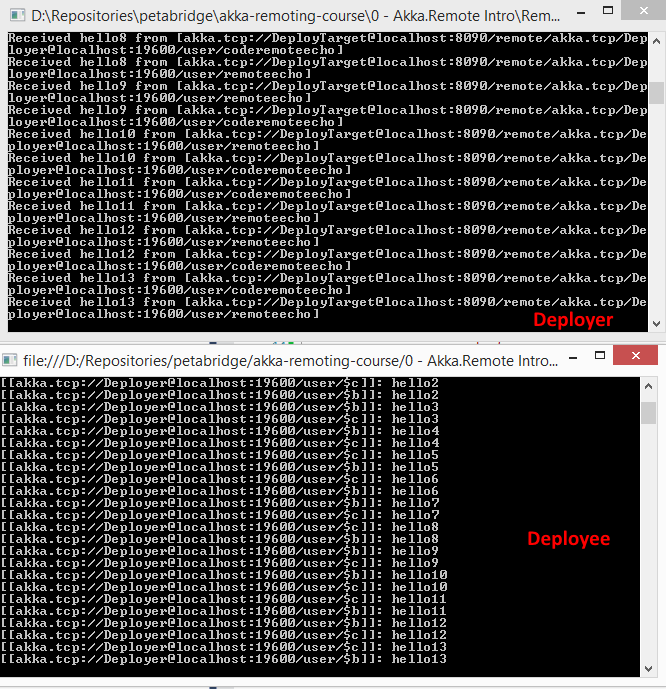
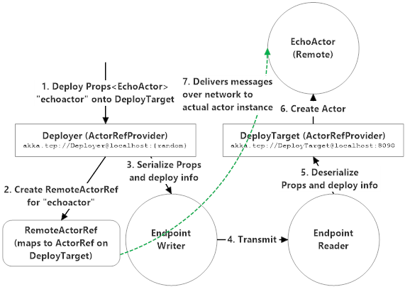

Remotely Deploying Actors
Deploying an actor means two things simultaneously:
- Creating an actor instance with specific, explicitly configured properties and
- Getting an
IActorRefto that actor.
With Akka.Remote we get a new exciting detail: the network location to which an actor is deployed becomes a configuration detail.
Remote Deployment Example
That's right - we can deploy code over the network with Akka.Remote.
Here's what that concept looks like expressed as Akka.NET code:
Shared Actor / Message Code
/*
* Create an actor and a message type that gets shared between Deployer and DeployTarget
* in a common DLL
*/
/// <summary>
/// Actor that just replies the message that it received earlier
/// </summary>
public class EchoActor : ReceiveActor
{
public EchoActor()
{
Receive<Hello>(hello =>
{
Console.WriteLine("[{0}]: {1}", Sender, hello.Message);
Sender.Tell(hello);
});
}
}
public class Hello
{
public Hello(string message)
{
Message = message;
}
public string Message { get; private set; }
}
DeployTarget (process that gets deployed onto)
class Program
{
static void Main(string[] args)
{
using (var system = ActorSystem.Create("DeployTarget", ConfigurationFactory.ParseString(@"
akka {
actor.provider = ""Akka.Remote.RemoteActorRefProvider, Akka.Remote""
remote {
helios.tcp {
port = 8090
hostname = localhost
}
}
}")))
{
Console.ReadKey();
}
}
}
Deployer (process that does deploying)
class Program
{
class SayHello { }
class HelloActor : ReceiveActor
{
private IActorRef _remoteActor;
private int _helloCounter;
private ICancelable _helloTask;
public HelloActor(IActorRef remoteActor)
{
_remoteActor = remoteActor;
Receive<Hello>(hello =>
{
Console.WriteLine("Received {1} from {0}", Sender, hello.Message);
});
Receive<SayHello>(sayHello =>
{
_remoteActor.Tell(new Hello("hello"+_helloCounter++));
});
}
protected override void PreStart()
{
_helloTask = Context.System.Scheduler.ScheduleTellRepeatedlyCancelable(TimeSpan.FromSeconds(1),
TimeSpan.FromSeconds(1), Context.Self, new SayHello(), ActorRefs.NoSender);
}
protected override void PostStop()
{
_helloTask.Cancel();
}
}
static void Main(string[] args)
{
using (var system = ActorSystem.Create("Deployer", ConfigurationFactory.ParseString(@"
akka {
actor{
provider = ""Akka.Remote.RemoteActorRefProvider, Akka.Remote""
deployment {
/remoteecho {
remote = ""akka.tcp://DeployTarget@localhost:8090""
}
}
}
remote {
helios.tcp {
port = 0
hostname = localhost
}
}
}")))
{
var remoteAddress = Address.Parse("akka.tcp://DeployTarget@localhost:8090");
//deploy remotely via config
var remoteEcho1 = system.ActorOf(Props.Create(() => new EchoActor()), "remoteecho");
//deploy remotely via code
var remoteEcho2 =
system.ActorOf(
Props.Create(() => new EchoActor())
.WithDeploy(Deploy.None.WithScope(new RemoteScope(remoteAddress))), "coderemoteecho");
system.ActorOf(Props.Create(() => new HelloActor(remoteEcho1)));
system.ActorOf(Props.Create(() => new HelloActor(remoteEcho2)));
Console.ReadKey();
}
}
}
So what happens in this sample? Well first, let's take a look at the output if we run this with just one deployer.

As far as the DeployTarget is concerned, it's receiving messages from a RemoteActorRef belonging to the Deployer, hence why we can see akka.tcp://Deployer@localhost:19600/user/$c as the Sender address.
But wait! Wait a minute! We didn't actually create any actors in the DeployTarget process!!!!
That's because the Deployer created the actors... but it created them INSIDE DeployTarget's process. Over the network.
Syntax
In the above example, it's this piece of HOCON configuration:
deployment {
/remoteecho {
remote = "akka.tcp://DeployTarget@localhost:8090"
}
}
And this piece of C# code:
Props.Create(() => new EchoActor()).WithDeploy(Deploy.None.WithScope(new RemoteScope(remoteAddress)))
That actually specify to deploy the configured actor onto the specified remote Address, which belongs to the DeployTarget in this case.
How Remote Deployment Actually Works
The process of remote deployment feels magical, but it's actually pretty simple.

Rather than wait for a RemoteActorRef to send us a message, we create one in advance - knowing full well that we're going to be able to deploy one onto the remote actor system if we're able to form an association with the remote system. If we can't form a remote association with the DeployTarget system, then the RemoteActorRef we've just created will map to Deadletters and nothing will happen.
However, in the happy event that we can form a remote association with DeployTarget the following things will happen:
- A local name on for the actor we're remote deploying will be reserved on Deployer, since all actors must have a unique name;
- The
Propsfor theEchoActorwill be serialized, including all of the constructor arguments for theEchoActorclass, along with anything else in the actor's deployment such as router details, dispatcher configuration, and so forth; - The serialized
Propsand all of the relevant actor path and name information is transmitted over the network by Deployer'sEndpointWriterand received by DeployTarget'sEndpointWriter; - The
EndpointWriterdetermines that this is a special "deploy remote actor" message, and tells a special system actor (theRemoteDaemon) to create a newEchoActorinstance; and - Going forward, all messages sent to the
RemoteActorRefare automatically sent to theEchoActor.
And once all of that is done, we've successfully deployed an EchoActor over the network from Deployer to DeployTarget.
Important Things to Know About Remote Actor Deployments
Here are some important things to remember about remote actor deployments:
- All names for remote actors are determined by the deploying
ActorSystem. 1000 Deployer instances could all deploy an actor named "echoactor" onto the same DeployTarget instance and all 1000 of those operations would be successful. That's because the local actor created on DeployTarget has anActorPaththat looks likeakka.tcp://DeployTarget@localhost:8090/remote/akka.tcp/Deploye@localhost:19600/user/echoactor/- the fullAddressof each DeployerActorSystemis appended to the front of theActorPath, thereby guaranteeing that each remote deployed actor name is unique to the Deployer. - The C# code that defines the
EchoActortype and the message types it expects must be present on both the Deployer and the DeployTarget, or the deployment fails because thePropscan't be deserialized. - All of the constructor arguments for
EchoActorand any other remote-deployed actor must be serializable, again, because otherwise it can't be deployed.
When to Use Remote Deployment
When would you want to remotely deploy a new actor versus just sending a message to a remote actor that already exists somewhere else on the network?
There are two common scenarios for when you would want to deploy an actor remotely:
- Work distribution - you need to be able to push work onto remote machines using a remote or clustered router. This is exactly what the Cluster.WebCrawler sample does.
- Accessing machine-specific resources - if you wanted to gather
PerformanceCounterdata from an array of remote machines in order to get specific metrics from each machine, remote deployment is an effective tool for accomplishing that.